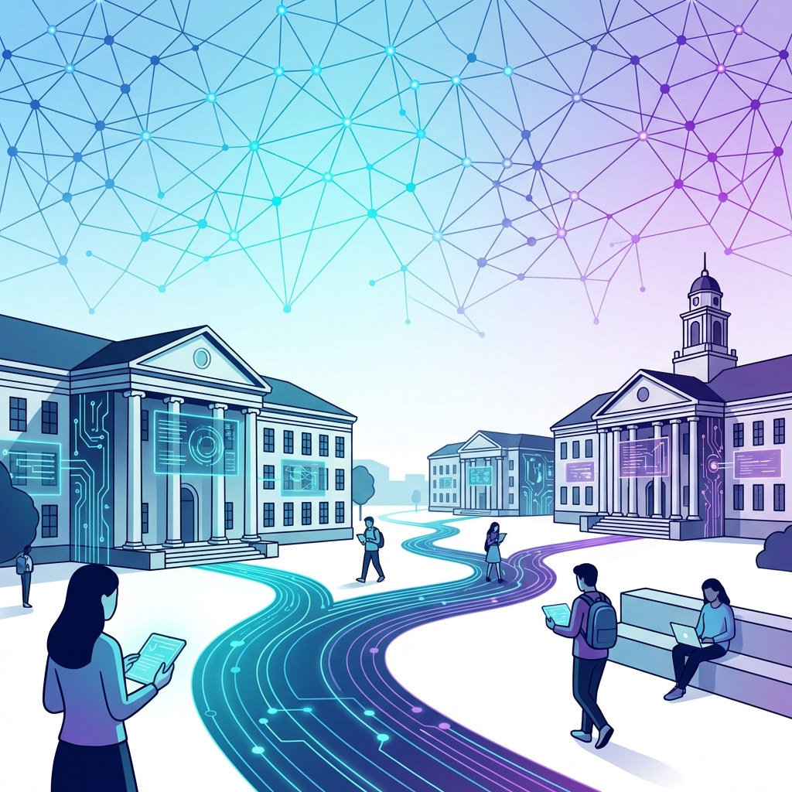
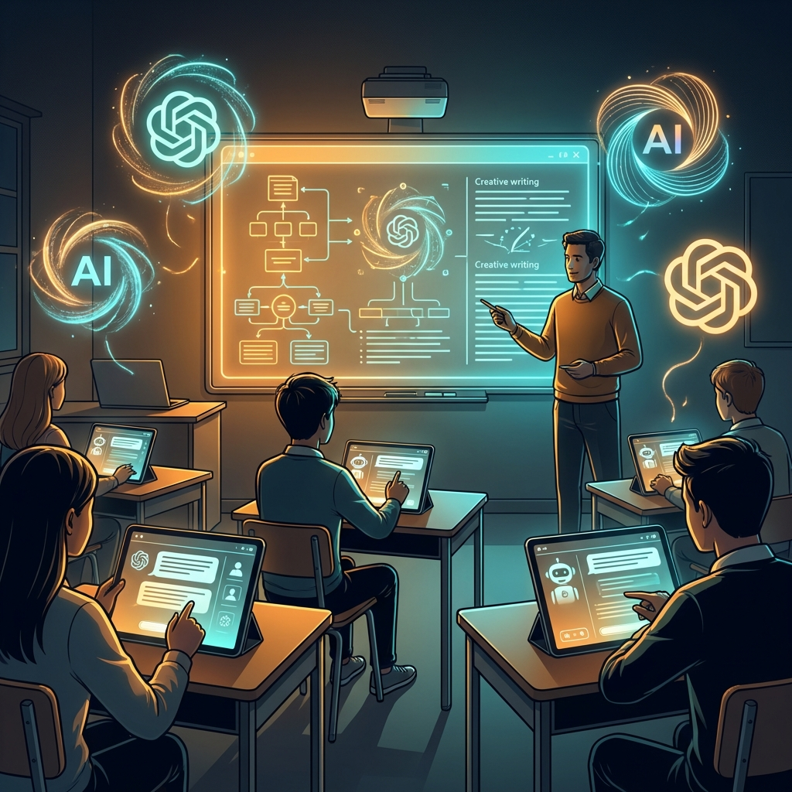

🎯 Klíčové iniciativy a programy
Česká republika zažívá transformaci vzdělávacího systému podporovanou státní iniciativou. Program základka.ai představuje dosud největší vzdělávací projekt zaměřený na AI pro pedagogy, spouštěný v období 2025/2026. Cílem je proškolit všechny učitele základních škol v České republice a poskytnout jim dlouhodobou podporu.
📚 Program základka.ai nabízí
- Více než 100 hodin obsahu – od vstupního online kurzu přes praktické webináře až po odborné konference
- Participace klíčových institucí: Ministerstvo školství, Ministerstvo průmyslu, Národní pedagogický institut a Hospodářská komora
Zásadní podporou pro praktickou výuku je Kurikulum umělé inteligence, které vytvořila iniciativa AI dětem ve spolupráci s Národním pedagogickým institutem. Jedná se o komplexní vzdělávací rámec obsahující 43 metodických materiálů určených pro žáky od 3. ročníku základní školy až po střední školy.
Materiály pokrývají všechny předměty mimo tělocviku, včetně mediální výchovy a kyberbezpečnosti, a jsou zdarma dostupné na webu kurikulum.aidetem.cz. Každá metodika obsahuje teoretickou část pro pedagogy, kompletní plán lekce a tisknutelné pracovní listy. Za vynikající pedagogický přístup bylo toto kurikulum oceněno na prestižních AI Awards 2025.
🛠️ Praktické AI nástroje pro pedagogy
Jazykové modely pro všeobecné použití
💬 ChatGPT
Zůstává nejuniverzálnějším nástrojem s nejvyšším skóre 131,5 bodů v porovnávacích testech a nejnižší mírou halucinací (1,7% u modelu GPT-4 Turbo). Nejnovější aktualizace zahrnují:
- GPT-5 s režimy Auto/Fast/Thinking pro pokročilé úlohy
- Deep research agent pro důkladné rešerše
- Napojení na GitHub pro přímou editaci kódu
- Paměťové schopnosti a automatické agenty pro komplexní úkoly
✨ Google Gemini
Zaznamenal signifikantní pokrok integrací modelu Gemini 3 Flash, který nabízí uvažovací schopnosti na úrovni PhD s bleskovou rychlostí. Mezi nejnovější funkce patří:
- Nano Banana – přesné kreslení a anotace přímo na obrázkách
- Hlubší porozumění vizuálnímu obsahu – práce s fotografiemi, diagramy či naskenovanými poznámkami
🎭 Claude od Anthropic
Vyniká schopností přiznat si, když informaci nezná, místo generování nepřesných odpovědí. Nabízí až 200 000 tokenů kontextového okna (dvojnásobek ChatGPT), což umožňuje práci s delšími dokumenty, a je oceňován za bezpečnost dat a etickou reflexi.
NotebookLM a jeho revoluce
Google NotebookLM prošel transformací integrací s Gemini 3, čímž se z jednoduchého sumarizačního nástroje stal komplexní výzkumný systém pro pedagogy. Inovace umožňují:
- Multimodální zpracování (text, obrázky, strukturovaná data)
- Automatické generování prezentací z výzkumných materiálů
- Převod složitých informací do tabulek exportovatelných do Google Sheets
- Přímý import poznámkových bloků do Gemini
- Deep Research funkcionalita s volbou mezi rychlým a hlubokým režimem analýzy
České a lokalizované řešení
🇨🇿 ScioBot
Unikátní český nástroj speciálně vytvořený pro pedagogy. Umožňuje během minut vytvořit kompletní přípravu na hodinu s jasně definovanými cíli, poutavými aktivitami a inspirativními zdroji, přičemž vychází z Rámcového vzdělávacího programu.
- Bezplatná verze: 10 příprav měsíčně
- Součástí je ScioChatbot pro vysvětlování učiva
🎓 MagicSchool.ai
Webová platforma obsahující více než 80 AI nástrojů. Umožňuje přizpůsobení obsahu konkrétní třídě s ohledem na věk, znalosti a styl učení žáků. Novinkou je Study Bot – interaktivní chatbot komunikující s každým žákem individuálně.
📊 VividBoard
Interaktivní platforma kombinující prezentace, testy, analýzy výsledků a hodnocení. AI automaticky generuje otázky z nahraných materiálů a vytváří slovní hodnocení žáků.
🔄 Nejnovější aktualizace jazykových modelů
Konkurenční landscape modelů v lednu 2026
V prosinci 2025 a lednu 2026 došlo k pokročilému vývoji konkurenčního prostředí. Microsoft Copilot Studio nyní standardně používá model GPT-4.1 (náhrada za GPT-4o) a model o3 pro pokročilejší uvažování. OpenAI představila GPT-5 jako novou generaci zaměřenou na „task-ready" aplikace.
🚀 Klíčové inovace
- Multimodální schopnosti – kvalitativní skok ve zpracování kombinací textu, obrazu, zvuku a videa
- Paměť uživatelských preferencí – personalizovanější interakce bez nutnosti opakovat informace
- Nové možnosti pro interaktivní vzdělávání
📈 Výzkum a efektivita AI ve vzdělávání
Česká vysoká školská instituce ČVUT zahájila v roce 2025 mezinárodní výzkum zaměřený na AI ve vzdělávání, který sleduje nejen efektivitu výuky, ale také dopady na motivaci, emoce a etické postoje studentů.
Vědecká literatura zdůrazňuje potenciál personalizace vzdělávání prostřednictvím AI. Systémy mohou analyzovat data o studentech a vytvářet individualizované učební plány umožňující postupovat vlastním tempem. Okamžitá zpětná vazba je klíčová – AI systémy průběžně sledují pokrok a nabízejí dodatečný materiál přesně v momentě potřeby.
Inovativní formy učení s AI zahrnují simulace, virtuální reality a adaptivní hry poskytující praktické zkušenosti v bezpečném prostředí – například virtuální biologická laboratoř pro experimenty, které by byly v realitě příliš nákladné nebo nebezpečné.
📊 Statistiky přijetí v České republice
MŠMT mimo rámec programu základka.ai spouští program Digitální škola 2025, který poskytuje školám zdarma AI nástroje speciálně adaptované pro český vzdělávací kontext.
💡 Praktické aplikace AI ve výuce
Automatizace rutinních úkolů
Největší praktickou výhodou je automatizace časově náročných příprav. Učitelé mohou během minut generovat testy na různých úrovních obtížnosti, pracovní listy diferenciované pro žáky se specifickými potřebami, pracovní plány, slovní hodnocení a projektová zadání.
Personalizace a diferenciace
Pedagogům AI umožňuje vytvářet obsah přizpůsobený individuálním potřebám. Pomocí prompts mohou generovat různé varianty vysvětlení téhož jevu, přizpůsobené úrovni předchozích znalostí žáků, jejich zájmům nebo způsobu učení. Chatboti mohou sloužit jako individuální virtuální tutoři.
Podpora žáků se speciálními potřebami
AI nástroje nabývají na důležitosti jako asistivní technologie. Překlad v reálném čase, vokalizace textu a generování alternativních formátů materiálů (např. vizualizace abstraktních konceptů) rozšiřují dostupnost vzdělávání.
⚖️ Etické otázky a právní rámec
🏛️ EU AI Act – důležité milníky
- Únor 2025: Začínají platit zákazy zakázaných praktik v AI
- Srpen 2026: Vstoupí v účinnost speciální pravidla pro velké jazykové modely (ChatGPT, Gemini)
Řada odborníků zdůrazňuje, že pedagogové by měli žákům vysvětlit, jak AI funguje, její omezení a rizika. Diskutuje se o tom, kdy je AI vhodným nástrojem a kdy nikoliv, o transparentnosti při jejím použití a o rozvoji kritického myšlení vůči výstupům AI.
🎯 Závěr
Rok 2025 a počátek 2026 představují zásadní milník pro integraci AI do českého vzdělávacího systému. Státem podporované iniciativy jako základka.ai a kurikulum AI dětem poskytují pedagogům nezbytné nástroje a vědomosti.
Technologické pokroky v jazykových modelech – ať jde o ChatGPT, Gemini či Claude – nabízejí bez předchozích let neviděné schopnosti pro personalizaci, automatizaci a interaktivní výuku. Zároveň je zřejmé, že úspěšná implementace vyžaduje průběžné vzdělávání pedagogů, reflexi etických aspektů a zaměření na rozvoj lidských dovedností, které AI nelze nahradit.